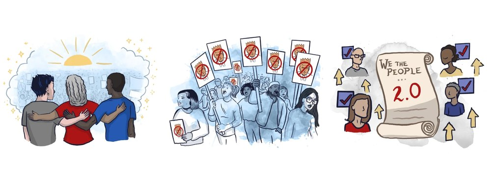
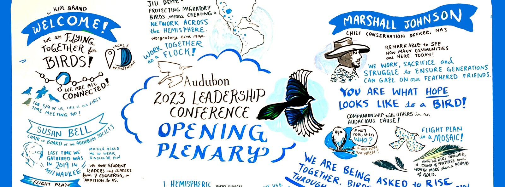
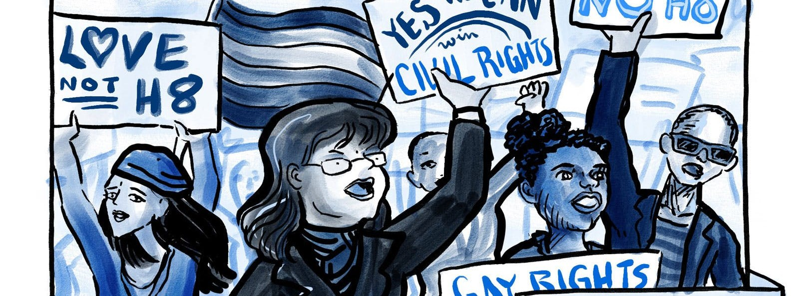
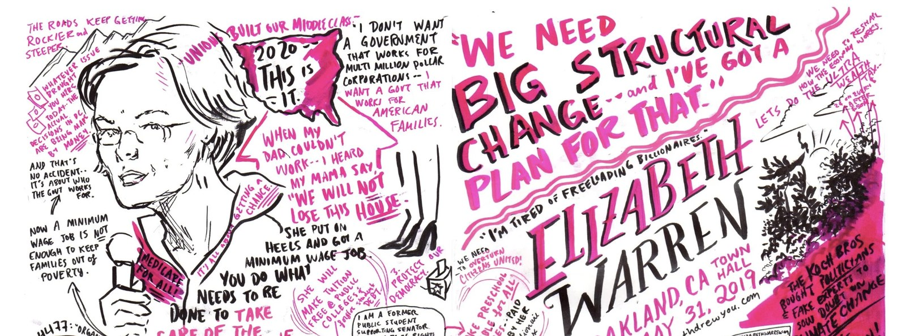
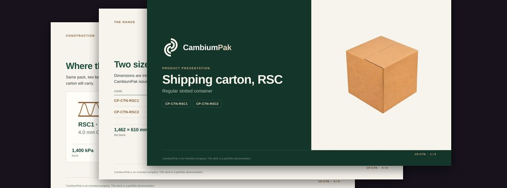
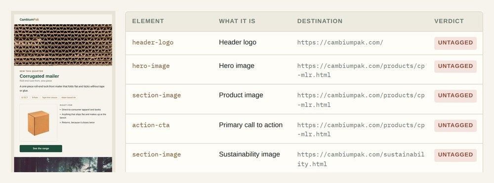
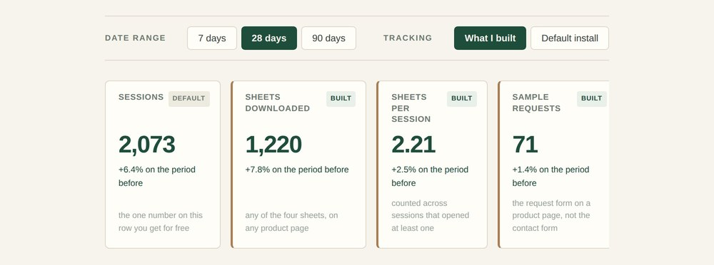
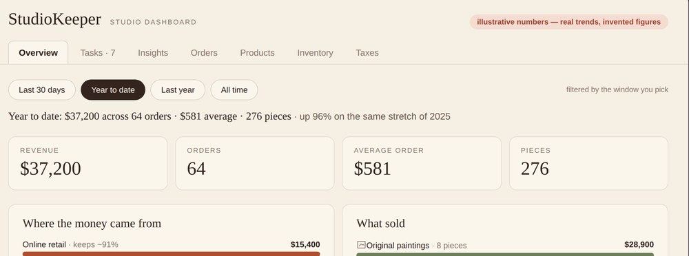

I make the mission clear, beautiful, and actionable.
Choose Democracy’s most watched explainer. Four hundred illustrations now in a published book and progressive training slides. Live boards for Audubon’s national leadership conference. When the issue matters, clarity is the whole job.

Featured nonprofit work
Clear, beautiful, actionable, in that order, with the receipts for each.
Choose Democracy
The mission work I would show first. Their most watched explainer at 26,000 views, more than 400 illustrations now published in "What Will You Do If Trump Wins?" and used in real progressive trainings, and a Waging Nonviolence feature that reached more than 750,000 readers.
read →
Boards for a national conference
Live boards across the National Audubon Society’s 2023 Leadership Conference, including the opening plenary and a session on their five year strategic plan. Indigenous led content from the Seal River Watershed Alliance carried with the care it needed.
Graphic recording for the National Audubon Society, 2023 Leadership Conference. read →
Belle of the Bot
Public education built the way a small organization has to build it: one volunteer, one data file, zero recurring cost, and a system that stays consistent as it grows.
visit the site →More work
The rest of the deck, ordered for someone hiring for a mission.

Comics journalism
Journalism drawn rather than written, published by outlets that fact check. The Advocate put my book on its best of 2017 list and ComicsVerse reviewed it at 99 percent.

Independent civic scribing
Years of showing up unpaid to draw the rooms where organising happens. Four hours early to a Warren town hall for a spot near the front, and the campaign retweeted the drawing. Two Netroots Nations, the marches in St Louis and Phoenix, volunteer scribing for SURJ Sacred Heart.

Product deck generator
The kind of internal tool a lean team needs: it takes the repetitive production work off a person who should be doing the thinking.

Email campaign generator
Email that is compliant by construction, which matters more when there is nobody whose whole job is to catch the mistake.

Analytics build and dashboard
Analytics a small organization can actually own: no per seat dashboard fee, no agency retainer, and reporting the team can pull themselves.

A studio dashboard for my art business
Reporting built for a team of one, where every insight reads as a plain sentence with its caveat attached rather than as a number without context.

Passage
Care work made visible: tracking the person being cared for, and tracking the caregiver, who is usually the one nobody is watching.
Also on the record
Thank you for making something we can hold onto.
A Lexington Club patron, quoted in Mission LocalTo illustrate and take notes at the same time just blows my mind.
A bystander at an event, on the public recordEveryone wants this girl to have peace and time to recover and not another trauma like jail time.
Quoted in CBS News as spokesperson for the Savannah Dietrich campaign, 2012
open to marketing operations, analytics and martech roles
Let’s talk.
I have spent four years on one pro democracy account, drawn a national conservation conference live, and shown up unpaid for years to draw the rooms where organising happens. I know the difference between work that looks good and work that gets used.
Tell me what has to be understood, and by whom, and I will show you how I would make it land.